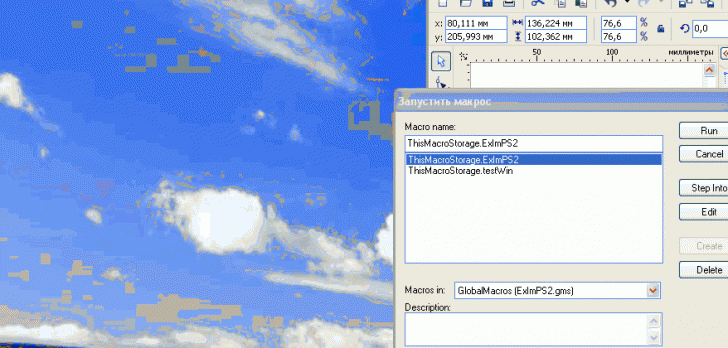

Улучшенный ExImPhotoshop
Немного усовершенствовал макрос ExImPhotoshop.
Код экспорта/импорта остался тем же (спасибо CrazyMaxTM за открытый исходник), изменился немного принцип работы макроса.
Вы выделяете картинку и запускаете макрос. После запуска макрос вызывает Фотошоп и
устанавливает связь с экспортированным изображением, загруженным в окно. Если Фотошоп
уже был запущен, то макрос также работает.
Как только вы сохраните измененный psd-шный файл, макрос автоматически импортирует
картинку в Корел. Вы можете сколько угодно корректировать psd-файл, сохранившись,
(нажав, например, Ctrl-S) вы тут же увидите изменения в Кореле. Кроме этого возможно
трансформировать картинку в самом Corel DRAW.
Для завершения работы макроса нужно всего лишь закрыть psd-файл или сам Фотошоп или
нажать кнопку Break link в Кореле. В общем, смотрим видео.

Пока макрос протестировал в связке Corel DRAW X3/X5 - Photoshop 8.0/CS2 (уж какой фотошоп нашелся :), хотя предполагаю, что и старшие версии Фотошопа будут работать с
макросом.
В ближайшее время постараюсь протестировать макрос с CS3/CS4, тогда уж и выложу.
P.S. Имеющиеся на gif-овском ролике искажения цвета картинки обусловлены, видимо,
переключениями системной палитры, в реале все остается без искажений.
P.P.S. Вообще-то, дабы не плодить фотошоповские темы, правильней было разместить всю
эту инфу в разделе Главная » Макросы и скрипты » Макрос ExImPhotoshop, но почему-то там можно оставить только текстовый комментарий, картинку нельзя вставить :(

вещь нужная!
Насколько я понимаю во время редактирования картинки в PhotoShop макрос продолжает работать? Тогда такой вопрос: можно ли будет отправить на редактирование несколько картинок подряд (так я могу из картинок импортированных в CorelDraw сделать коллаж в PhotoShop, а потом вернуть его обратно). Или, например, можно ли будет не закончив работу в PhotoShop продолжить работу в CorelDraw, а потом вернуться в PhotoShop и закончить? И еще, будут ли сохраняться слои после внедрения картинки в CorelDraw?
Не думал о возможности редактирования нескольких картинок, хотя, в принципе,
реализовать это несложно. Выделить несколько картинок, макрос экспортнет каждую
отдельным psd-файлом и в режиме ожидания будет отслеживать изменения всех файлов.
Как видно из ролика, можно работать параллельно и в Фотошопе и в Corel DRAW, главное не обрывать связь между программами (кнопкой Break link или закрытием окна в Фотошопе). Держать в Кореле картинку выделенной все время или выделять перед импортом также не нужно, можно работать с другими объектами. Со слоями особо не экспериментировал, после импорта из Фотошопа макрос просто удаляет нижний фоновый слой. Хотя, если добавить несколько слоев в Фотошопе в экспортированный psd-файл и сохранить его, макрос импортирует все слои, но в дальнейшем обновлять их не будет, они так и останутся по центру страницы, куда Корел по умолчанию производит импорт.
хорошо бы потестить на win7 x64
Еще немного доработал макрос. "Подружил" его с CS3 и реализовал возможность одновременного экспорта нескольких картинок. Кроме того, выяснил прикольную фишку - поскольку Фотошоп не блокирует открытые psd-файлы, то их можно редактировать в другом редакторе. Т.е. после экспорта вы просто сворачиваете Фотошоп, а коллега-дизайнер может открыть по сети экспортированные файлы из папки temp и редактировать их параллельно с вашей работой в Кореле. Как только он сохранит файл, макрос автоматически импортирует его обратно в Corel DRAW. Получается кооперативная работа над макетом.
(в приведенном ролике Фотошоп уже был запущен)
Макрос будет в свободном доступе после тестирования с CS4
А где можно его увидеть(скачать)- Улучшенный ExImPhotoshop, подскажите пожалуйста?
Действительно, огромная благодарность автору и где можно скачать новую улучшенную версию?
Добрый день, очень жду таковой макросец, где и когда можно будет скачать?
Заранее спасибо вам за труды ваши!
Очень нужен на корел X6 помогите пожалуйста
shark, подскажите как с вами связаться, по поводу данного макроса, есть к вам интересные предложения.
Страницы